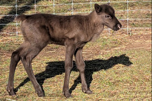
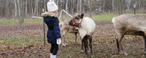
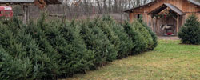
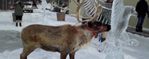

ODIN'S DAY MARKET at the Reindeer Farm
**Note new date:** Sunday, April 26, 9am-1pm
Come meet baby Odin and friends! We will be opening the farm for one day, for visitors to view the reindeer. We will also have a smattering of vendors for your pleasure: Edgemere Coffee, Lucky Ducks Mini-donuts, RJ Booster Club, Nibbles and Nosh Sourdough, Dinies Tinies Crochet Plushies and more.
This is a free event and no need to register.
We welcome more vendors. There is no vendor charge. If you would like to set up a booth text Mike at 585 282 9892 or email Mike@shortsvillereindeer.com

Visit the reindeer farm. We offer events and classes year round at our little farm in Western New York. Enjoy a holiday visit with the reindeer or a private reindeer experience. Join us for classes in beekeeping, maple syrup making, apple cider pressing and more. Schedule a private photo shoot. Reservations required. Learn more about reindeer farm visits.

Christmas tree sales. We are sold out of pre-cut trees. We still have a small selection of cut-your-own Norway spruce by appointment. All trees $60. We wrap; you load and tie down using your own rope. Learn more.

Hire the reindeer. We'll bring the reindeer to add some magic to your community festival, company party, customer appreciation event, wedding, or other special day. We get busy in November and December; book early to reserve your date. Learn more about hiring the reindeer.